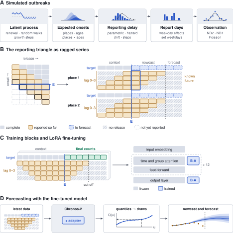
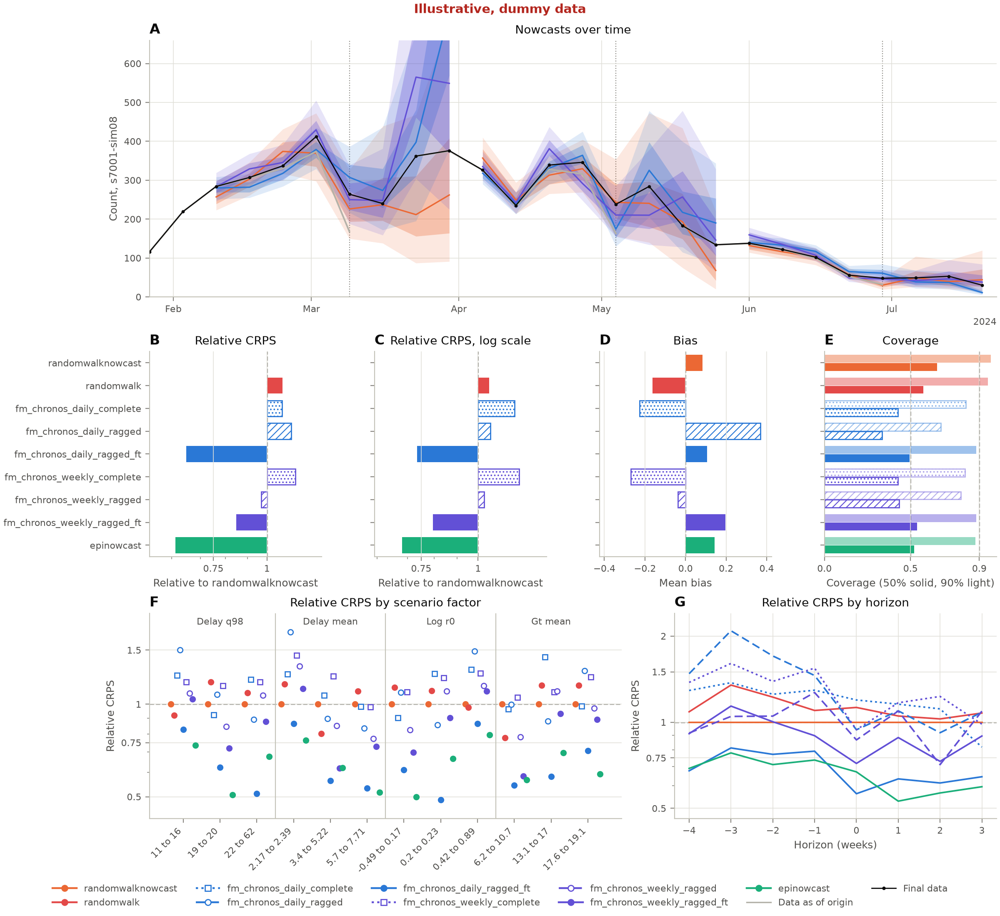
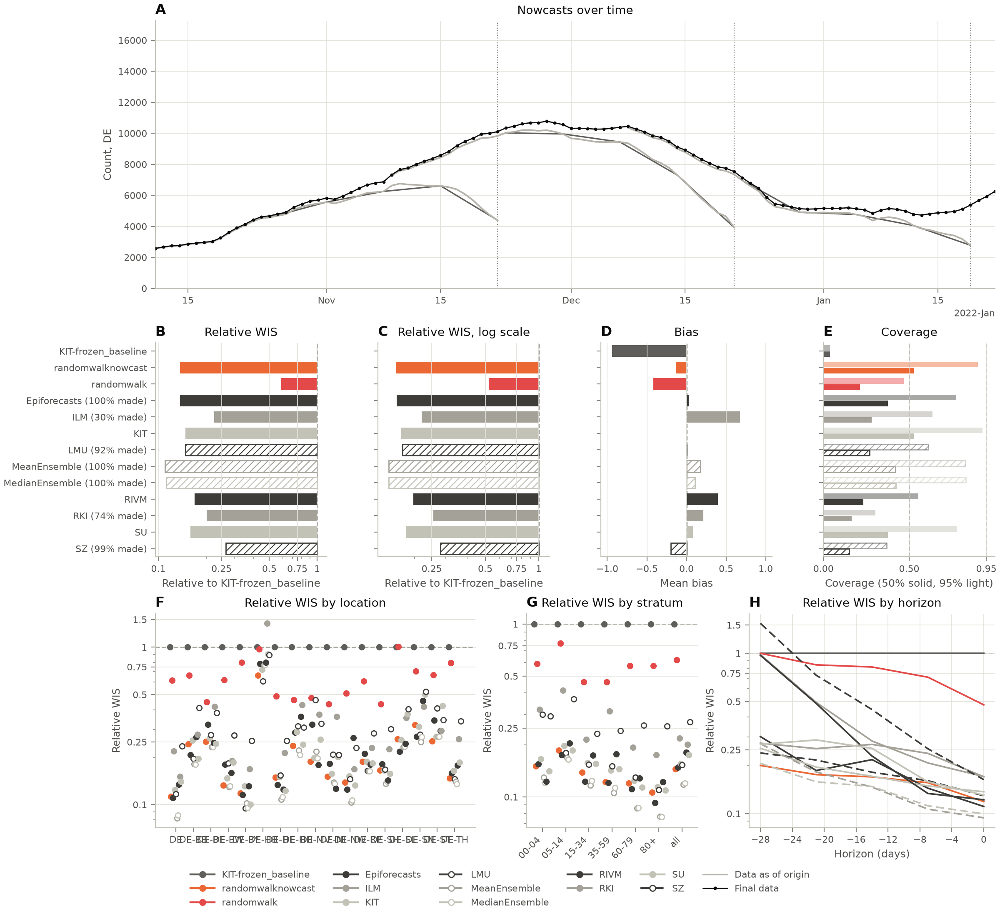
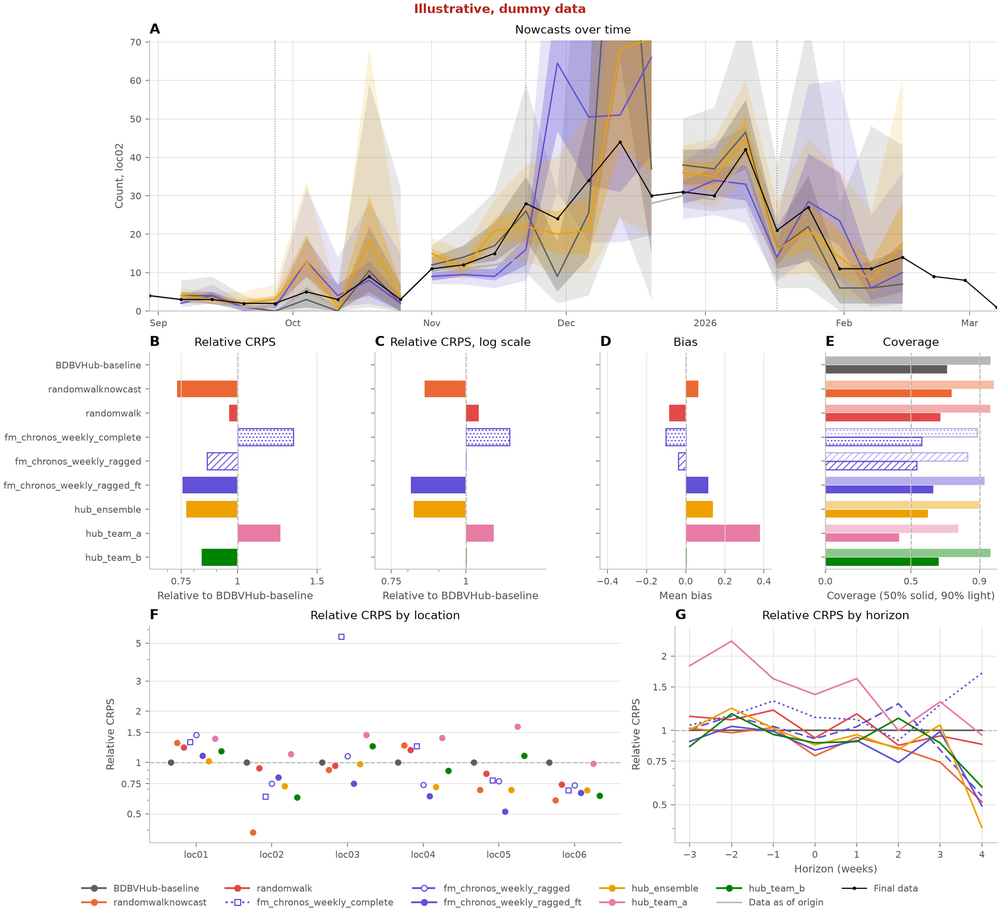

Title to be chosen
Introduction
- The gap.
- Real-time case counts are incomplete because of reporting delays.
- Generic forecasting models do not use the reporting structure.
- Key references: (Höhle and Heiden 2014; Johnson et al. 2025; Reich et al. 2022).
- Context.
- Nowcasting methods model reporting delays directly.
- Time series foundation models forecast well with no training on the target data.
- Training on domain-specific synthetic data has precedent: KernelSynth for Chronos (Ansari et al. 2024), ForecastPFN (Dooley et al. 2023), prior-fitted networks (Müller et al. 2022; Hollmann et al. 2025), and Mantis for outbreaks (Dudley et al. 2026).
- Key references: (McGough et al. 2020; Günther et al. 2021; Wolffram et al. 2023; Ansari et al. 2024; Das, Kong, et al. 2024; Woo et al. 2024; Rasul et al. 2023; Garza, Challu, and Mergenthaler-Canseco 2023; Aksu et al. 2024; Shchur et al. 2025; Kalahasti et al. 2026; Dudley et al. 2025).
- What we did.
- We fine-tuned a foundation model on synthetic outbreak data, following that precedent but fine-tuning a general model rather than training from scratch.
- We evaluated it retrospectively and prospectively.
- Key references: (Ansari et al. 2025; Johnson et al. 2025).
Methods
Data
- The German COVID-19 hospitalisation nowcast hub.
- The Ebola forecasting hub target and its releases.
- Key references: (Wolffram et al. 2023; KIT Metrics Lab et al. 2025; InsightNet-US 2026; MacNeil et al. 2010).
Baselines
randomwalk, a random walk with no delay adjustment, andrandomwalknowcast, a random walk nowcast.- Both in full in the SI.
- Key references: (Johnson et al. 2025).
Foundation model setup and fine-tuning
- Chronos-2, given the reporting triangle as series: one series per place and reporting delay, each missing until reported. Introduced alongside the reporting triangle, with Figure 1B.
- Fine-tuned on synthetic data on a laptop, with checkpoints at doublings of simulated outbreaks from 1,000 upwards, each outbreak giving several forecast origins and 10 observation draws, continuing while held-out loss keeps falling. The last is the main model.
- Compared with Chronos-2 given only complete data points, to show what the ragged structure and fine-tuning add.
- Figure 1, a multi-panel schematic of our pipeline: (A) the assumptions in the epinowcast simulations, (B) the reporting triangle laid out as ragged series for Chronos-2, (C) training blocks and LoRA fine-tuning, and why it is fast, and (D) forecasting with the fine-tuned model.
- Key references: (Ansari et al. 2025, 2024; Hu et al. 2021; Das, Faw, et al. 2024).

Synthetic data generation
- Simulated with epinowcast over a grid of outbreak, delay and noise settings.
- A table in the main text gives the grid of synthetic scenarios.
- The full process and an overview of the epinowcast model used are in the SI.
- Key references: (Abbott et al. 2026; Lison et al. 2024; Park et al. 2024; Ansari et al. 2024; Dooley et al. 2023; Müller et al. 2022; Hollmann et al. 2025).
| Setting | Range or mix |
|---|---|
| Strata | one 30%, 2-26 places 40%, 2-8 age groups 20%, 6-16 places by 3-7 ages 10% |
| Quiet strata | up to 90% of places seeded with almost no cases |
| Generative process | renewal, renewal with incubation, growth walk, log-incidence walk, growth steps, smooth growth; a sixth each |
| Generation time | gamma, mean 2-20 days, CV 0.3-0.7 |
| Starting log Rt | normal, mean 0.1, sd 0.2 |
| Starting daily growth (no generation time) | normal, mean 0.01, sd 0.02; limits plus or minus 0.1 |
| Trajectory | turning over, flat, rising then falling, second wave; a quarter each |
| Seed | 0.2-200 a day, log-uniform |
| Size | 10 to 300,000 cases times strata/26; draws expected over 1.5 times the cap rejected before simulating |
| Duration | 16-40 weeks (16-24 for places by ages) |
| Delay distribution | lognormal, gamma (CV 0.7 or more), exponential, or a non-parametric hazard alone |
| Delay mean | 2-21 days, log-uniform |
| Longest delay | 3-12 weeks, 5-10 times the delay mean |
| Delay changes | stable 20%; otherwise drift, 0-3 step changes, spread changes, weekly walk, week hazard effects |
| Report-date effects | day of week 70%, holidays 30%, report-week effects 40%, weekday-only reporting 50%, weekday switch 30% |
| Observation model | negative binomial NB2 40%, NB1 40% (dispersion matched to NB2, epinowcast #937), Poisson 20% |
| Overdispersion | sqrt(phi) 0.05-1.5 |
Evaluation on held-out synthetic data
- A held-out set of simulations was not used during development.
- Sample forecasts scored with CRPS and log-scale CRPS, bias, and coverage, relative to
randomwalknowcast. - Scored against a rolling evaluation set of the data as reported D days later, with D each outbreak’s 98% delay.
- Key references: (Bracher et al. 2021; Bosse et al. 2023; Gneiting and Raftery 2007; Gneiting, Balabdaoui, and Raftery 2007; Sherratt et al. 2023).
Case study 1: German nowcast hub
- Compared with the hub’s models, relative to the hub’s own baseline, and evaluated as the hub did.
- Quantile forecasts scored with WIS and log-scale WIS, bias, and coverage, against a rolling evaluation set of the data as reported D days later (Wolffram et al. 2023).
- Daily and weekly versions may not both make sense here.
- The nowcast dates are split in half. We developed our setup on the first half only, and the second half is held out for the results.
- Key references: (Wolffram et al. 2023; Johnson et al. 2025; Amaral et al. 2025).
Case study 2: prospective submission to the Ebola forecasting hub
- Compared with the other submissions, relative to the hub’s own baseline.
- Scored as for the held-out synthetic data, with D the empirical 98% point of the hub data’s reporting delay.
- Our models’ forecasts are saved prospectively, alongside the main submissions as they were made.
- Key references: (InsightNet-US 2026; Viboud et al. 2018; Funk et al. 2019).
Implementation
- The tools we used, each cited: Python, PyTorch on the laptop GPU, chronos-forecasting, PEFT for LoRA, R and epinowcast for simulation, and scoringrules for scoring, checked against scoringutils.
- The evaluation runs as a Snakemake workflow, so every result can be reproduced from the raw data.
Results
Each section has a figure panel. Each panel shows:
- nowcasts over time (ribbons);
- scores relative to the baseline (
randomwalknowcastfor synthetic data, the hub’s baseline for each case study), with natural- and log-scale WIS (or CRPS, MAE where they make sense); - bias;
- 50% and 90% coverage;
- score variation by location and horizon, supported by SI plots.
- for Germany, a dotted line marking the split between the development and held-out halves, with scores split by half.
The plots in primarycensored-paper are a model for these. Each section has two paragraphs, one on visual performance and one summarising scores.
Key references: the Methods references, with (Bracher et al. 2021; Bosse et al. 2023) for the natural- and log-scale panels.
Held-out synthetic data
- Visual performance of the candidate models against
randomwalkandrandomwalknowcast. - A summary of score performance.
- How scores change with the amount of fine-tuning data (doublings from 1,000 outbreaks), as an SI figure.

randomwalknowcast on the natural and log scales; (D) bias; (E) 50% and 90% coverage; (F) relative CRPS by scenario factor; (G) relative CRPS by horizon. Illustrative, dummy data
Placeholder summary from the workflow: the best model was epinowcast, with a relative score of 0.61 and 0.68 on the log scale, against randomwalknowcast.
| study | model | metric | score | log_score | bias | coverage_50 | coverage_90 | n | rel_score | rel_log_score |
|---|---|---|---|---|---|---|---|---|---|---|
| synthetic | epinowcast | crps | 12.6 | 0.12 | 0.143 | 0.522 | 0.876 | 1051 | 0.613 | 0.681 |
| synthetic | fm_chronos_daily_complete | crps | 22.3 | 0.211 | -0.227 | 0.426 | 0.821 | 1051 | 1.08 | 1.2 |
| synthetic | fm_chronos_daily_ragged | crps | 23.4 | 0.187 | 0.369 | 0.335 | 0.676 | 1051 | 1.14 | 1.07 |
| synthetic | fm_chronos_daily_ragged_ft | crps | 13.3 | 0.129 | 0.105 | 0.495 | 0.882 | 1051 | 0.648 | 0.734 |
| synthetic | fm_chronos_weekly_complete | crps | 24 | 0.216 | -0.271 | 0.426 | 0.817 | 1051 | 1.17 | 1.23 |
| synthetic | fm_chronos_weekly_ragged | crps | 19.9 | 0.181 | -0.0368 | 0.435 | 0.793 | 1051 | 0.969 | 1.03 |
| synthetic | fm_chronos_weekly_ragged_ft | crps | 17.4 | 0.14 | 0.197 | 0.538 | 0.882 | 1051 | 0.847 | 0.796 |
| synthetic | randomwalk | crps | 22.3 | 0.186 | -0.163 | 0.574 | 0.95 | 1051 | 1.09 | 1.06 |
| synthetic | randomwalknowcast | crps | 20.6 | 0.176 | 0.0841 | 0.656 | 0.967 | 1051 | 1 | 1 |
German nowcast hub
- Visual performance against the other models.
- A summary of score performance.
- Key references: (Wolffram et al. 2023; Amaral et al. 2025).

KIT-frozen_baseline on the natural and log scales; (D) bias; (E) 50% and 95% coverage; (F) relative WIS by location; (G) by age group; (H) by horizon.
Placeholder summary from the workflow: the best model was MeanEnsemble, with a relative score of 0.11 and 0.14 on the log scale, against KIT-frozen_baseline.
| study | model | metric | score | log_score | bias | coverage_50 | coverage_95 | n | rel_score | rel_log_score |
|---|---|---|---|---|---|---|---|---|---|---|
| germany | Epiforecasts | wis | 22.6 | 0.0302 | 0.0364 | 0.375 | 0.774 | 9185 | 0.137 | 0.159 |
| germany | ILM | wis | 78 | 0.0404 | 0.677 | 0.281 | 0.637 | 2716 | 0.224 | 0.22 |
| germany | KIT | wis | 24.5 | 0.032 | 0.00999 | 0.526 | 0.929 | 9200 | 0.148 | 0.168 |
| germany | KIT-frozen_baseline | wis | 165 | 0.191 | -0.941 | 0.0373 | 0.0373 | 9200 | 1 | 1 |
| germany | LMU | wis | 26.4 | 0.0339 | 0.00453 | 0.269 | 0.61 | 8495 | 0.148 | 0.171 |
| germany | MeanEnsemble | wis | 18 | 0.0271 | 0.174 | 0.419 | 0.828 | 9177 | 0.11 | 0.143 |
| germany | MedianEnsemble | wis | 18.4 | 0.0271 | 0.11 | 0.422 | 0.83 | 9177 | 0.112 | 0.143 |
| germany | RIVM | wis | 28 | 0.0376 | 0.397 | 0.233 | 0.553 | 9200 | 0.169 | 0.197 |
| germany | RKI | wis | 30.1 | 0.0489 | 0.215 | 0.163 | 0.304 | 6800 | 0.202 | 0.255 |
| germany | SU | wis | 26.3 | 0.0341 | 0.0796 | 0.376 | 0.781 | 9200 | 0.159 | 0.179 |
| germany | SZ | wis | 44.2 | 0.0538 | -0.196 | 0.149 | 0.37 | 9131 | 0.266 | 0.28 |
| germany | randomwalk | wis | 98.1 | 0.0996 | -0.42 | 0.212 | 0.467 | 9200 | 0.593 | 0.522 |
| germany | randomwalknowcast | wis | 22.6 | 0.03 | -0.137 | 0.525 | 0.901 | 9200 | 0.137 | 0.157 |
Ebola hub submissions
- Visual performance against the other submissions.
- A summary of score performance.

BDBVHub-baseline on the natural and log scales; (D) bias; (E) 50% and 90% coverage; (F) relative CRPS by location; (G) by horizon. Illustrative, dummy data
Placeholder summary from the workflow: the best model was randomwalknowcast, with a relative score of 0.73 and 0.85 on the log scale, against BDBVHub-baseline.
| study | model | metric | score | log_score | bias | coverage_50 | coverage_90 | n | rel_score | rel_log_score |
|---|---|---|---|---|---|---|---|---|---|---|
| ebola | BDBVHub-baseline | crps | 4.24 | 0.293 | -0.00217 | 0.711 | 0.964 | 810 | 1 | 1 |
| ebola | fm_chronos_weekly_complete | crps | 5.63 | 0.347 | -0.102 | 0.562 | 0.886 | 810 | 1.33 | 1.18 |
| ebola | fm_chronos_weekly_ragged | crps | 3.63 | 0.293 | -0.0367 | 0.533 | 0.83 | 810 | 0.856 | 1 |
| ebola | fm_chronos_weekly_ragged_ft | crps | 3.2 | 0.237 | 0.116 | 0.631 | 0.931 | 810 | 0.755 | 0.809 |
| ebola | hub_ensemble | crps | 3.26 | 0.24 | 0.14 | 0.599 | 0.904 | 810 | 0.77 | 0.817 |
| ebola | hub_team_a | crps | 5.28 | 0.326 | 0.38 | 0.432 | 0.777 | 810 | 1.25 | 1.11 |
| ebola | hub_team_b | crps | 3.53 | 0.294 | 0.00569 | 0.662 | 0.964 | 810 | 0.833 | 1 |
| ebola | randomwalk | crps | 4.06 | 0.308 | -0.0843 | 0.673 | 0.965 | 810 | 0.958 | 1.05 |
| ebola | randomwalknowcast | crps | 3.11 | 0.25 | 0.0655 | 0.737 | 0.983 | 810 | 0.734 | 0.853 |
Discussion
- Summary of what we did.
- Strengths and weaknesses.
- Weaknesses: only one foundation model, only one source of synthetic data, and limited case studies.
- Weakness: we did not compare against epinowcast, or, for the synthetic study, against the data-generating model itself.
- Strengths: both retrospective and real-time case studies, and synthetic data that are easy to tune to a setting.
- Strength: fine-tuning ran locally on consumer hardware (a laptop), so it is accessible.
- Weakness: fine-tuning used the laptop’s GPU, which made it several times faster, and not everyone has one. On a laptop CPU alone it would still run in hours.
- Key references: (Kalahasti et al. 2026; Meyer et al. 2025).
- Domain knowledge through synthetic data.
- Domain knowledge enters through the synthetic data source.
- Fingers crossed it improves results; to fill in from the results.
- Key references: (Dudley et al. 2026, 2025; Dooley et al. 2023; Hollmann et al. 2025; Ansari et al. 2025).
- Against the literature.
- Other uses of foundation models in infectious disease modelling. Key references: (Kalahasti et al. 2026; Cai, Huang, and Xu 2026; Wang et al. 2025; Jafari et al. 2026; Du et al. 2025; Li et al. 2025; Aygün et al. 2025; Martinson et al. 2026).
- Fine-tuning in other domains. Key references: (Laglil et al. 2026; Das, Faw, et al. 2024; Hu et al. 2021).
- Other nowcasting approaches. Key references: (Bastos et al. 2019; Seaman et al. 2022; Bergström et al. 2022; Sumalinab et al. 2024; Schneble et al. 2021; Kassteele, Eilers, and Wallinga 2019; Overton et al. 2023; Mellor et al. 2025; Tang et al. 2025; Stoner, Economou, and Halliday 2020; Kamarthi, Rodríguez, and Prakash 2021; Koemen et al. 2025; Wilsens, Antonio, and Claeskens 2025).
- A possible emulator.
- Fine-tuning on epinowcast simulations may give a fast emulator of that package.
- We did not compare against epinowcast, so we cannot say how close it is.
- This could be useful for other slow, long-running packages.
- Further work.
- Other foundation models.
- More case studies.
- A comparison with custom neural networks.
- Testing the fine-tuned model as an emulator of epinowcast.
- Fine-tuning with other epidemiological features as covariates, such as distances between locations or mobility.
- Key references: (Das, Kong, et al. 2024; Woo et al. 2024; Rasul et al. 2023; Kamarthi, Rodríguez, and Prakash 2021; Koemen et al. 2025; KIT Metrics Lab, Bracher, and Schienle 2025).
- Conclusions.
- Reuse state-of-the-art generic forecasting models with domain-specific insight.
- Fine-tuning on a package’s simulations could give a fast emulator of that package, which may help other long-running packages.
- It shows promise, and more work is needed.